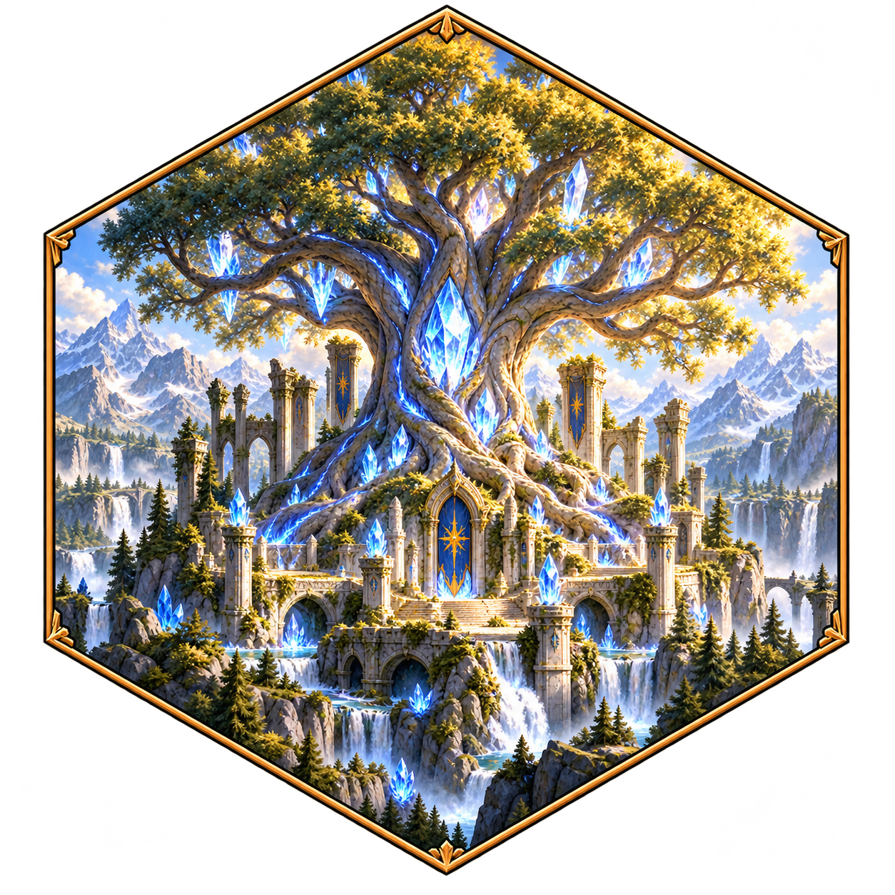

Dawno temu, zanim pierwsze rzeki znalazły drogę do morza, na szczycie świata wyrosło Kryształowe Drzewo. Jego korzenie sięgały głębiej niż najstarsze jaskinie, a liście z czystego kryształu łapały światło gwiazd i rozsiewały je po całej krainie. Tam, gdzie padał ich blask, łąki zielenią się do dziś, a rzeki pachną deszczem.
Drzewo strzegło równowagi. Za dnia śpiewały w jego gałęziach jednorożce, nocą odpoczywały w jego cieniu nietoperze i wilki. Nikt nie był tu panem i nikt nie był sługą. Każdy miał swoje miejsce.
Aż przyszła Noc Pękniętego Nieba. Czarny Smok, najstarszy z dzieci ciemności, zapragnął mieć całe światło dla siebie. Uderzył w Drzewo z taką siłą, że z jego korony wypadły trzy Kryształy Opieki i rozsypały się po krainie. Jeden wpadł do jaskini, w której łakomy cyklop od wieków gromadził błyskotki. Drugi porwał gryf i zaniósł do gniazda pełnego skradzionych skarbów. Trzeci zatonął w ruinach, gdzie śpi wielogłowa hydra.
„Od tamtej nocy Drzewo słabnie. Jego blask gaśnie, a wraz z nim gaśnie wiosna.”